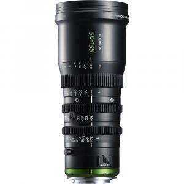

Lensa Zoom Sinema Fujinon MK 50-135mm T2.9 (Dudukan E S35mm)

Rp 450.000 / hari
Rp 900.000 / 3 hari
Sewa 2 hari GRATIS 1 hari
1 Hari = 24 Jam
Deskripsi Produk
Lensa ini memiliki kesesuaian warna dengan lensa Fujinon lainnya seperti seri HK, ZK, dan XK, yang memungkinkan transisi antar lensa yang mulus. Diameter 85mm memungkinkan penggunaan dengan banyak matte box bergaya sinema melalui penggunaan cincin step-up opsional (cincin tidak termasuk). Lensa ini hanya berbobot 2,16 pon, yang cukup ringan untuk lensa zoom sinema yang mempertahankan fokus dan aperture di seluruh rentang panjang fokus. Lensa ini dirancang untuk kamera dengan dudukan Sony E, sehingga memiliki jarak fokus flensa yang pendek, tetapi lensa ini memungkinkan penyesuaian jarak fokus flensa sehingga Anda dapat menyesuaikannya dengan kamera yang Anda gunakan.